Sigmoid <<
Previous Next >> Solvespace
設計最佳化
1 Stochastic Algorithms
1.1 Overview
1.2 Random Search
1.3 Adaptive Random Search
1.4 Stochastic Hill Climbing
1.5 Iterated Local Search
1.6 Guided Local Search
1.7 Variable Neighborhood Search
1.8 Greedy Randomized Adaptive Search
1.9 Scatter Search
1.10 Tabu Search
1.11 Reactive Tabu Search
2 Evolutionary Algorithms
2.1 Overview
2.2 Genetic Algorithm
2.3 Genetic Programming
2.4 Evolution Strategies
2.5 Differential Evolution
2.6 Evolutionary Programming
2.7 Grammatical Evolution
2.8 Gene Expression Programming
2.9 Learning Classifier System
2.10 Non-dominated Sorting Genetic Algorithm
2.11 Strength Pareto Evolutionary Algorithm
3 Physical Algorithms
3.1 Overview
3.2 Simulated Annealing
3.3 Extremal Optimization
3.4 Harmony Search
3.5 Cultural Algorithm
3.6 Memetic Algorithm
4 Probabilistic Algorithms
4.1 Overview
4.2 Population-Based Incremental Learning
4.3 Univariate Marginal Distribution Algorithm
4.4 Compact Genetic Algorithm
4.5 Bayesian Optimization Algorithm
4.6 Cross-Entropy Method
5 Swarm Algorithms
5.1 Overview
5.2 Particle Swarm Optimization
5.3 Ant System
5.4 Ant Colony System
5.5 Bees Algorithm
5.6 Bacterial Foraging Optimization Algorithm
6 Immune Algorithms
6.1 Overview
6.2 Clonal Selection Algorithm
6.3 Negative Selection Algorithm
6.4 Artificial Immune Recognition System
6.5 Immune Network Algorithm
6.6 Dendritic Cell Algorithm
7 Neural Algorithms
7.1 Overview
7.2 Perceptron
7.3 Back-propagation
7.4 Hopfield Network
7.5 Learning Vector Quantization
7.6 Self-Organizing Map
Introduction to Genetic Algorithms
This is an introduction to genetic algorithm methods for optimization. Genetic algorithms were formally introduced in the United States in the 1970s by John Holland at University of Michigan. The continuing price/performance improvements of computational systems has made them attractive for some types of optimization. In particular, genetic algorithms work very well on mixed (continuous and discrete), combinatorial problems. They are less susceptible to getting 'stuck' at local optima than gradient search methods. But they tend to be computationally expensive.
To use a genetic algorithm, you must represent a solution to your problem as a genome (or chromosome). The genetic algorithm then creates a population of solutions and applies genetic operators such as mutation and crossover to evolve the solutions in order to find the best one(s).
This presentation outlines some of the basics of genetic algorithms. The three most important aspects of using genetic algorithms are: (1) definition of the objective function, (2) definition and implementation of the genetic representation, and (3) definition and implementation of the genetic operators. Once these three have been defined, the generic genetic algorithm should work fairly well. Beyond that you can try many different variations to improve performance, find multiple optima (species - if they exist), or parallelize the algorithms.
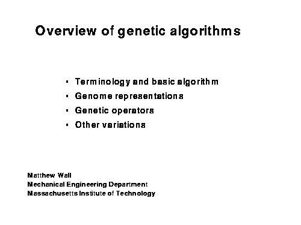
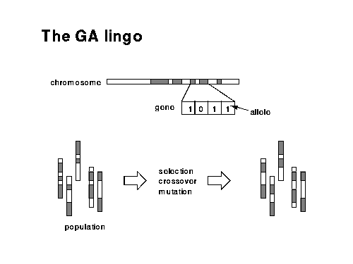
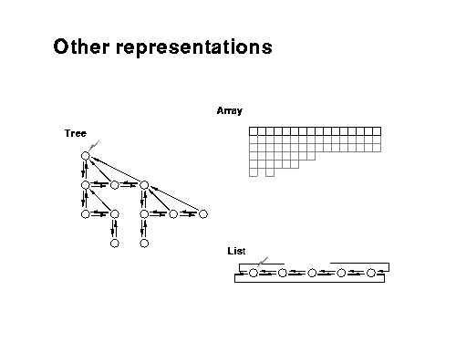
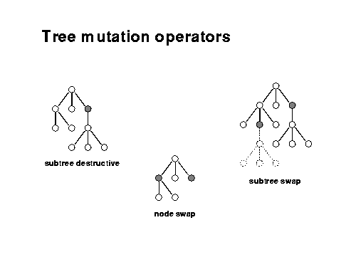
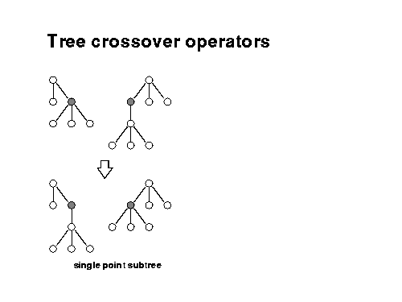
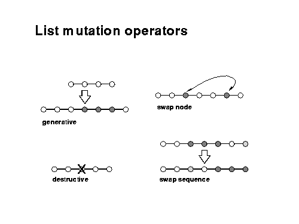
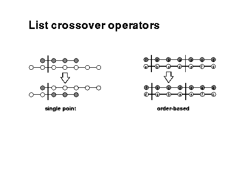
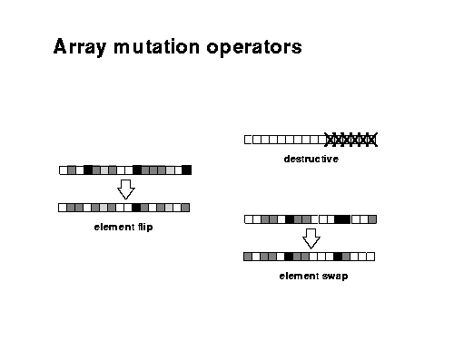
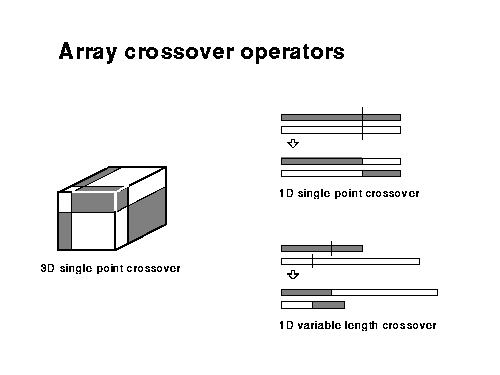
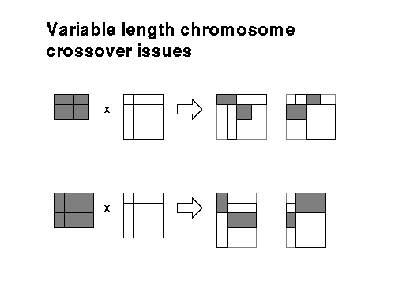
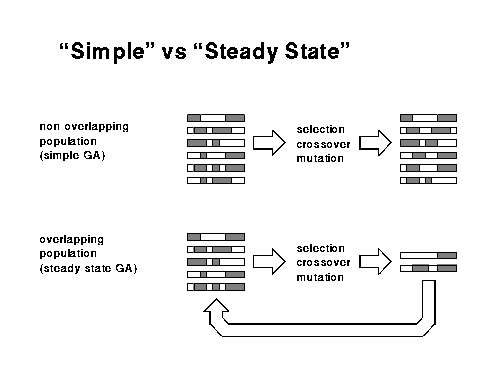
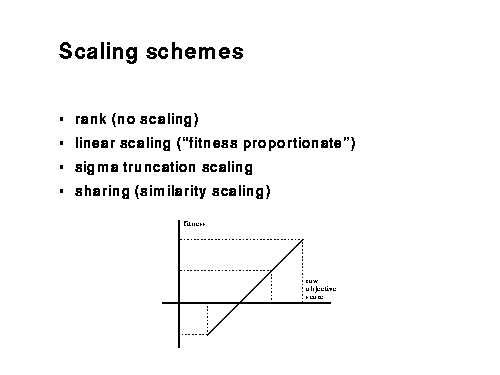
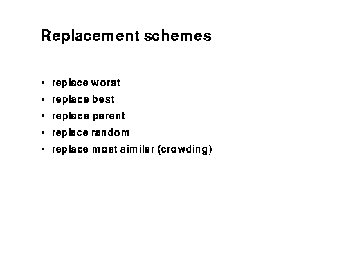
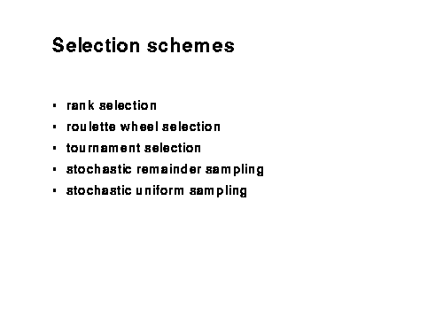
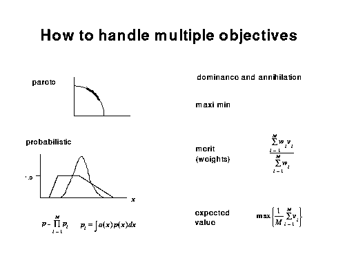
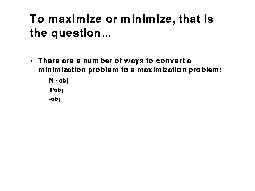
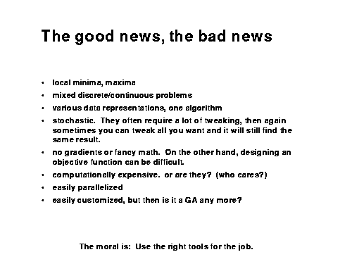
Examples:
https://www.linkedin.com/pulse/genetic-algorithm-implementation-python-ahmed-gad
https://github.com/ahmedfgad/GeneticAlgorithmPython
https://github.com/framp/timetabling-solver
ga.py
import numpy
def cal_pop_fitness(equation_inputs, pop):
# Calculating the fitness value of each solution in the current population.
# The fitness function calulates the sum of products between each input and its corresponding weight.
fitness = numpy.sum(pop*equation_inputs, axis=1)
return fitness
def select_mating_pool(pop, fitness, num_parents):
# Selecting the best individuals in the current generation as parents for producing the offspring of the next generation.
parents = numpy.empty((num_parents, pop.shape[1]))
for parent_num in range(num_parents):
max_fitness_idx = numpy.where(fitness == numpy.max(fitness))
max_fitness_idx = max_fitness_idx[0][0]
parents[parent_num, :] = pop[max_fitness_idx, :]
fitness[max_fitness_idx] = -99999999999
return parents
def crossover(parents, offspring_size):
offspring = numpy.empty(offspring_size)
# The point at which crossover takes place between two parents. Usually, it is at the center.
crossover_point = numpy.uint8(offspring_size[1]/2)
for k in range(offspring_size[0]):
# Index of the first parent to mate.
parent1_idx = k%parents.shape[0]
# Index of the second parent to mate.
parent2_idx = (k+1)%parents.shape[0]
# The new offspring will have its first half of its genes taken from the first parent.
offspring[k, 0:crossover_point] = parents[parent1_idx, 0:crossover_point]
# The new offspring will have its second half of its genes taken from the second parent.
offspring[k, crossover_point:] = parents[parent2_idx, crossover_point:]
return offspring
def mutation(offspring_crossover, num_mutations=1):
mutations_counter = numpy.uint8(offspring_crossover.shape[1] / num_mutations)
# Mutation changes a number of genes as defined by the num_mutations argument. The changes are random.
for idx in range(offspring_crossover.shape[0]):
gene_idx = mutations_counter - 1
for mutation_num in range(num_mutations):
# The random value to be added to the gene.
random_value = numpy.random.uniform(-1.0, 1.0, 1)
offspring_crossover[idx, gene_idx] = offspring_crossover[idx, gene_idx] + random_value
gene_idx = gene_idx + mutations_counter
return offspring_crossover
ga_ex1.py
import numpy
import ga
"""
The y=target is to maximize this equation ASAP:
y = w1x1+w2x2+w3x3+w4x4+w5x5+6wx6
where (x1,x2,x3,x4,x5,x6)=(4,-2,3.5,5,-11,-4.7)
What are the best values for the 6 weights w1 to w6?
We are going to use the genetic algorithm for the best possible values after a number of generations.
"""
# Inputs of the equation.
equation_inputs = [4,-2,3.5,5,-11,-4.7]
# Number of the weights we are looking to optimize.
num_weights = len(equation_inputs)
"""
Genetic algorithm parameters:
Mating pool size
Population size
"""
sol_per_pop = 8
num_parents_mating = 4
# Defining the population size.
pop_size = (sol_per_pop,num_weights) # The population will have sol_per_pop chromosome where each chromosome has num_weights genes.
#Creating the initial population.
new_population = numpy.random.uniform(low=-4.0, high=4.0, size=pop_size)
print(new_population)
"""
new_population[0, :] = [2.4, 0.7, 8, -2, 5, 1.1]
new_population[1, :] = [-0.4, 2.7, 5, -1, 7, 0.1]
new_population[2, :] = [-1, 2, 2, -3, 2, 0.9]
new_population[3, :] = [4, 7, 12, 6.1, 1.4, -4]
new_population[4, :] = [3.1, 4, 0, 2.4, 4.8, 0]
new_population[5, :] = [-2, 3, -7, 6, 3, 3]
"""
best_outputs = []
num_generations = 1000
for generation in range(num_generations):
print("Generation : ", generation)
# Measuring the fitness of each chromosome in the population.
fitness = ga.cal_pop_fitness(equation_inputs, new_population)
print("Fitness")
print(fitness)
best_outputs.append(numpy.max(numpy.sum(new_population*equation_inputs, axis=1)))
# The best result in the current iteration.
print("Best result : ", numpy.max(numpy.sum(new_population*equation_inputs, axis=1)))
# Selecting the best parents in the population for mating.
parents = ga.select_mating_pool(new_population, fitness,
num_parents_mating)
print("Parents")
print(parents)
# Generating next generation using crossover.
offspring_crossover = ga.crossover(parents,
offspring_size=(pop_size[0]-parents.shape[0], num_weights))
print("Crossover")
print(offspring_crossover)
# Adding some variations to the offspring using mutation.
offspring_mutation = ga.mutation(offspring_crossover, num_mutations=2)
print("Mutation")
print(offspring_mutation)
# Creating the new population based on the parents and offspring.
new_population[0:parents.shape[0], :] = parents
new_population[parents.shape[0]:, :] = offspring_mutation
# Getting the best solution after iterating finishing all generations.
#At first, the fitness is calculated for each solution in the final generation.
fitness = ga.cal_pop_fitness(equation_inputs, new_population)
# Then return the index of that solution corresponding to the best fitness.
best_match_idx = numpy.where(fitness == numpy.max(fitness))
print("Best solution : ", new_population[best_match_idx, :])
print("Best solution fitness : ", fitness[best_match_idx])
import matplotlib.pyplot
matplotlib.pyplot.plot(best_outputs)
matplotlib.pyplot.xlabel("Iteration")
matplotlib.pyplot.ylabel("Fitness")
matplotlib.pyplot.show()
ga_max_ex1.py
#! /usr/bin/env python
from pylab import *
#Functions
# Define the x function
def x_function(x):
#_function = (sin(300)**2)/(1+(x-500)**2)*50
#_function = sin(x)*5+sin(x/10)*5+sin(x/100)*10
_function = 8000*x - 0.25*x**2
return _function
# Convert decimal to a binary string
def den2bin(f):
bStr = ''
n = int(f)
if n < 0: raise
if n == 0: return '0'
while n > 0:
bStr = str(n % 2) + bStr
n = n >> 1
return bStr
#Convert decimal to a binary string of desired size of bits
def d2b(f, b):
n = int(f)
base = int(b)
ret = ""
for y in range(base-1, -1, -1):
ret += str((n >> y) & 1)
return ret
#Invert Chromosome
def invchr(string, position):
if int(string[position]) == 1:
string = string[:position] + '0' + string[position+1:]
else:
string = string[:position] + '1' + string[position+1:]
return string
#Roulette Wheel
def roulette(values, fitness):
n_rand = random()*fitness
sum_fit = 0
for i in range(len(values)):
sum_fit += values[i]
if sum_fit >= n_rand:
break
return i
# Genetic Algorithm Code to find the Maximum of F(X)
#Range of Values
x_max = 32000
x_min = 0
#GA Parameters
# Due my laziness to do the code, the population size must be a even number and the values for x are always integers.
# Feel free to correct it :)
pop_size = 100
mutation_probability = 0.20
number_of_generations = 10
#Variables & Lists to be used during the code
gen_1_xvalues = []
gen_1_fvalues = []
generations_x = []
generations_f = []
fitness = 0
#Size of the string in bit
x_size = int(len(den2bin(x_max)))
print("Maximum chromosome size of x is", x_size, "bits, i.e.,", pow(2,x_size), "variables.")
#first population - random values
for i in range(pop_size):
x_tmp = int(round(randint(x_max-x_min)+x_min))
gen_1_xvalues.append(x_tmp)
f_tmp = x_function(x_tmp)
gen_1_fvalues.append(f_tmp)
#Create total fitness
fitness += f_tmp
#print 'gen 1', gen_1_xvalues
#Getting maximum value for initial population
max_f_gen1 = 0
for i in range(pop_size):
if gen_1_fvalues[i] >= max_f_gen1:
max_f_gen1 = gen_1_fvalues[i]
max_x_gen1 = gen_1_xvalues[i]
#Starting GA loop
for i in range(number_of_generations):
#Reseting list for 2nd generation
gen_2_xvalues = []
gen_2_fvalues = []
selected = []
#Selecting individuals to reproduce
for j in range(pop_size):
ind_sel = roulette(gen_1_fvalues,fitness)
selected.append(gen_1_xvalues[ind_sel])
#Crossing the selected members
for j in range(0, pop_size, 2):
sel_ind_A = d2b(selected[j],x_size)
sel_ind_B = d2b(selected[j+1],x_size)
#select point to cross over
cut_point = randint(1,x_size)
#new individual AB
ind_AB = sel_ind_A[:cut_point] + sel_ind_B[cut_point:]
#mutation AB
ran_mut = random()
if ran_mut < mutation_probability:
gene_position = randint(0,x_size)
ind_mut = invchr(ind_AB, gene_position)
ind_AB = ind_mut
#new individual BA
ind_BA = sel_ind_B[:cut_point] + sel_ind_A[cut_point:]
#mutation BA
ran_mut = random()
if ran_mut < mutation_probability:
gene_position = randint(0,x_size)
ind_mut = invchr(ind_BA, gene_position)
ind_BA = ind_mut
#Creating Generation 2
new_AB = int(ind_AB,2)
gen_2_xvalues.append(new_AB)
new_f_AB = x_function(new_AB)
gen_2_fvalues.append(new_f_AB)
new_BA = int(ind_BA,2)
gen_2_xvalues.append(new_BA)
new_f_BA = x_function(new_BA)
gen_2_fvalues.append(new_f_BA)
#print 'gen',i+2, gen_2_xvalues
#Getting maximum value
max_f_gen2 = 0
for j in range(pop_size):
if gen_2_fvalues[j] >= max_f_gen2:
max_f_gen2 = gen_2_fvalues[j]
max_x_gen2 = gen_2_xvalues[j]
#Elitism one individual
if max_f_gen1 > max_f_gen2:
max_f_gen2 = max_f_gen1
max_x_gen2 = max_x_gen1
gen_2_fvalues[0] = max_f_gen1
gen_2_xvalues[0] = max_x_gen1
#Transform gen2 into gen1
gen_1_xvalues = gen_2_xvalues
gen_1_fvalues = gen_2_fvalues
max_x_gen1 = max_x_gen2
max_f_gen1 = max_f_gen2
generations_x.append(max_x_gen2)
generations_f.append(max_f_gen2)
#Creating new fitness
fitness = 0
for j in range(pop_size):
f_tmp = x_function(gen_1_xvalues[j])
fitness += f_tmp
#Ploting
#Ploting Function
x = arange(x_min,x_max,0.01)
y = x_function(x)
#figure(1)
plot(x,y)
xlabel('x')
ylabel('F(x)')
title(r'$F(x)$')
#Ploting data for last generation
figure(2)
plot(gen_2_xvalues,gen_2_fvalues, 'bo')
xlabel('x')
ylabel('F(x)')
title(r'Data for last generation')
#Ploting data for maximum values for each generation
figure(3)
plot(range(number_of_generations),generations_f, 'ro')
xlabel('Generations')
ylabel('F(x) Maximum')
title(r'$F(x)$')
show()
real-coded genetic algorithm solve max volume problem:
import time
import math
class Chromosome(object):
def __init__(self, n=None):
self.np = n if n > 0 else 2
self.f = 0.0
self.v = [0.0] * n
def cp(self, obj):
"""
copy all atribute from another chromsome object
"""
self.np = obj.np
self.f = obj.f
self.v = obj.v[:]
def get_v(self, i):
return self.v[i]
def is_self(self, obj):
"""
check the object is self?
"""
return obj is self
def assign(self, obj):
if not self.is_self(obj):
self.cp(obj)
class Genetic(object):
def __init__(self, func, pType, nParm, nPop, pCross, pMute, pWin, bDelta, upper, lower):
"""
init(function func)
"""
self.func=func
self.pType = pType
self.nParm=nParm
self.nPop=nPop
self.pCross=pCross
self.pMute=pMute
self.pWin=pWin
self.bDelta=bDelta
self.chrom = [Chromosome(nParm) for i in range(nPop)]
self.newChrom = [Chromosome(nParm) for i in range(nPop)]
self.babyChrom = [Chromosome(nParm) for i in range(3)]
self.chromElite = [Chromosome(nParm)]
self.chromBest = [Chromosome(nParm)]
self.maxLimit = upper[:]
self.minLimit = lower[:]
self.maxGen = None
self.gen = None
self.seed = 0.0
self.iseed = 470211272.0
self.mask = 2147483647
def check(self, i, v):
"""
If a variable is out of bound,
replace it with a random value
"""
if (v > self.maxLimit[i]) or (v < self.minLimit[i]):
return self.randVal(self.minLimit[i], self.maxLimit[i])
return v
def crossOver(self):
for i in range(0, self.nPop-1, 2):
# crossover
if(self.rnd() < self.pCross):
for s in range(self.nParm):
# first baby, half father half mother
self.babyChrom[0].v[s] = 0.5 * self.chrom[i].v[s] + 0.5*self.chrom[i+1].v[s];
# second baby, three quaters of fater and quater of mother
self.babyChrom[1].v[s] = self.check(s, 1.5 * self.chrom[i].v[s] - 0.5*self.chrom[i+1].v[s])
# third baby, quater of fater and three quaters of mother
self.babyChrom[2].v[s] = self.check(s,-0.5 * self.chrom[i].v[s] + 1.5*self.chrom[i+1].v[s]);
for j in range(3):
self.babyChrom[j].f = self.func(self.babyChrom[j].v)
# maximization
if self.pType == 1:
if self.babyChrom[1].f > self.babyChrom[0].f:
self.babyChrom[0], self.babyChrom[1] = self.babyChrom[1], self.babyChrom[0]
if self.babyChrom[2].f > self.babyChrom[0].f:
self.babyChrom[2], self.babyChrom[0] = self.babyChrom[0], self.babyChrom[2]
if self.babyChrom[2].f > self.babyChrom[1].f:
self.babyChrom[2], self.babyChrom[1] = self.babyChrom[1], self.babyChrom[2]
else:
if self.babyChrom[1].f < self.babyChrom[0].f:
self.babyChrom[0], self.babyChrom[1] = self.babyChrom[1], self.babyChrom[0]
if self.babyChrom[2].f < self.babyChrom[0].f:
self.babyChrom[2], self.babyChrom[0] = self.babyChrom[0], self.babyChrom[2]
if self.babyChrom[2].f < self.babyChrom[1].f:
self.babyChrom[2], self.babyChrom[1] = self.babyChrom[1], self.babyChrom[2]
# replace first two baby to parent, another one will be
self.chrom[i].assign(self.babyChrom[0])
self.chrom[i+1].assign(self.babyChrom[1])
def delta(self, y):
r = float(self.gen) / self.maxGen;
return y*self.rnd()*math.pow(1.0-r, self.bDelta)
def fitness(self):
for j in range(self.nPop):
self.chrom[j].f = self.func(self.chrom[j].v)
self.chromBest[0].assign(self.chrom[0])
for j in range(self.nPop):
if self.pType == 1:
if(self.chrom[j].f > self.chromBest[0].f):
self.chromBest[0].assign(self.chrom[j])
else:
if(self.chrom[j].f < self.chromBest[0].f):
self.chromBest[0].assign(self.chrom[j])
if self.pType == 1:
if(self.chromBest[0].f > self.chromElite[0].f):
self.chromElite[0].assign(self.chromBest[0])
else:
if(self.chromBest[0].f < self.chromElite[0].f):
self.chromElite[0].assign(self.chromBest[0])
def initialPop(self):
for j in range(self.nPop):
for i in range(self.nParm):
self.chrom[j].v[i] = self.randVal(self.minLimit[i], self.maxLimit[i])
def mutate(self):
for i in range(self.nPop):
if self.rnd() < self.pMute:
s = self.random(self.nParm)
if (self.random(2) == 0):
self.chrom[i].v[s] += self.delta(self.maxLimit[s]-self.chrom[i].v[s])
else:
self.chrom[i].v[s] -= self.delta(self.chrom[i].v[s]-self.minLimit[s])
def report(self):
if self.gen == 0:
print("Genetik results - Initial population")
elif self.gen == self.maxGen:
print("Final Genetik results at", self.gen, "generations")
else:
print("Genetik results after", self.gen, "generations")
print("Function : %.6f" % (self.chromElite[0].f))
for i, p in enumerate(self.chromElite[0].v):
print("Var", i+1, ":", p)
def select(self):
"""
roulette wheel selection
"""
for i in range(self.nPop):
j = self.random(self.nPop)
k = self.random(self.nPop)
self.newChrom[i].assign(self.chrom[j])
if self.pType == 1:
if(self.chrom[k].f > self.chrom[j].f) and (self.rnd() > self.pWin):
self.newChrom[i].assign(self.chrom[k])
else:
if(self.chrom[k].f < self.chrom[j].f) and (self.rnd() < self.pWin):
self.newChrom[i].assign(self.chrom[k])
# in this stage, newChrom is select finish
# now replace origin chrom
for i in range(self.nPop):
self.chrom[i].assign(self.newChrom[i])
# select random one chrom to be best chrom, make best chrom still exist
j = self.random(self.nPop);
self.chrom[j].assign(self.chromElite[0])
def run(self, mxg, rp):
"""
// **** Init and run GA for maxGen times
// **** mxg : maximum generation
// **** rp : report cycle, 0 for final report or
// **** report each mxg modulo rp
"""
self.maxGen = mxg
self.rpt = rp
self.randomize()
self.initialPop()
self.chrom[0].f = self.func(self.chrom[0].v)
self.chromElite[0].assign(self.chrom[0])
self.gen = 0
self.fitness()
self.report()
for self.gen in range(1, self.maxGen + 1):
self.select()
self.crossOver()
self.mutate()
self.fitness()
if rp != 0:
if self.gen % self.rpt == 0:
self.report()
self.report()
def newSeed(self):
if(self.seed == 0.0):
self.seed=self.iseed
else:
self.seed *= 16807.0
self.seed = math.fmod(self.seed, self.mask)
def rnd(self):
self.newSeed()
return self.seed/self.mask
def randomize(self):
self.seed = time.time()
def random(self, k):
return int(self.rnd()*k)
def randVal(self, low, high):
number_types = (int, float)
if isinstance(low, number_types) and isinstance(high, number_types):
return self.rnd()*(high-low)+low
raise ValueError
#fittness function (cost function)
def evaluate(designVariablel):
surface = 80.0
# if pType is 1, the penality is negative (maximization problem)
# if pType is 0, the penality is positive (minimization problem)
penality = -1000
z = (surface-designVariablel[0]*designVariablel[1])/(2.0*(designVariablel[0]\
+designVariablel[1]))
volume = designVariablel[0]*designVariablel[1]*z
if(volume <= 0):
return penality
# box length and width need to be larger than 0
if(designVariablel[0] <= 0):
return penality
if(designVariablel[1] <= 0):
return penality
#return 1+1/(volume*volume)
return volume
#volume = Genetic(self, func, pType, nParm, nPop, pCross, pMute, pWin, bDelta, upper, lower):
volume = Genetic(evaluate, 1, 2, 1000, 0.95, 0.05, 0.95, 5, [0, 0], [50, 50])
volume.run(1000, 50)
利用 https://github.com/rmsolgi/geneticalgorithm 解相同 max volume 問題:
genecit_algorithm_max_volume_ex.7z
Sigmoid <<
Previous Next >> Solvespace